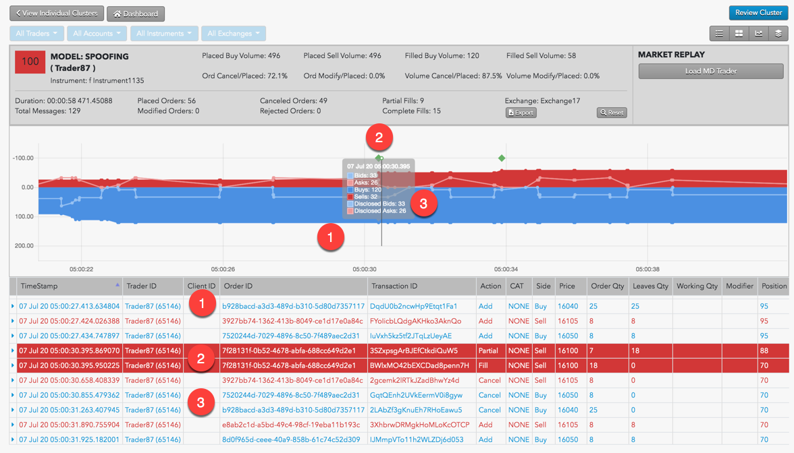
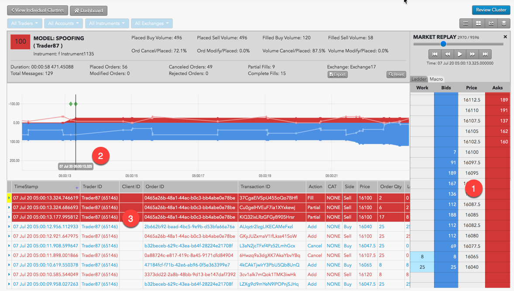

Spoofing represents an attempt to deceive the market into thinking that an instrument has more interest, liquidity or depth by placing large orders on one side for the purpose of causing traders to execute smaller orders on the opposite side. Once the intended orders are filled, the larger orders are deleted.
The Spoofing Model in TT Score analyzes and scores clusters that contain only manual trading or a mix of both automated and manual trading. Trading events that originate only from automated sources are scored separately by the Automated Spoofing Model.
Spoofing patterns
TT Score detects a variety of spoofing patterns, including:
-
Simple spoofing: A trader places a small order on one side (intent side) of the market that the trader wants to execute, followed by a much larger order on the other side (spoof side) of the market to mislead another trader into executing against the smaller order.
-
Spoofing with layering: A trader places a small order on the intent side of the market and orders at multiple price levels on the spoof side of the market. These spoof-side orders are designed to create a false impression of liquidity so that other participants execute against the smaller intent-side order. Once filled, all spoof-side orders are canceled or modified to avoid execution.
-
Spoofing with vacuuming: A trader places a small order on one side of the market and a larger order on the same side of the market. The larger spoof order is then canceled to entice market movement toward the smaller order.
-
Collapsing of layers: A trader tries to create a false appearance of large volume by circumventing pre-trade individual order size limits. The trader places a small order on the intent side and several small orders at a variety of price levels on the spoof side. The small individual spoof-side orders are then modified to the same price level to imply more volume at that price level.
-
Flipping: A trader places orders on one side of the market with the intent ot switch, or flip, to the other side of the market. In this pattern, a trader places a large spoof-side order at or near one side of the inside market to create a false impression of market depth, hoping to induce others to place orders on the same side at the same price point. Then the trader simultaneous cancels the spoof-side orders and flips the order from buy to sell (or vice versa) to execute against the other participants.
-
Spread squeezing: This spoofing pattern is unique to instruments with spreads that are multi-tick wide. A trader places order on the spoof-side at successively higher or lower prices with the spread to squeeze it one direction, enticing other market participants to joi or beat the newly established top of book. The trader then switches sides and executes against those participants. After execution, the trader cancels the spoof-side orders, and the market returns to its previous state. The trader then uses the same squeeze technique on the opposite side of the trade to trade out of the established position at an advantageous price.
Scoring methodology
TT Score computes a cluster score based on how similar the activity in the cluster matches trading activity that has drawn regulatory attention in other situations.
Higher scores indicate the trading activity within a cluster is more likely to risk regulatory concern. A company's risk monitors can use these scores to prioritize resources for investing which users' trading activity poses the most regulatory risk.
Score interpretation
For the spoofing pattern, each cluster is assigned a risk score on a sliding scale between 0-100. This score represents the probability that spoofing occurred during the duration of the cluster's trading activity.
{% include score-method.html %}
Scorecard metrics
The Scorecard Metrics section measures the following statistics related to abusive messaging:
- Disclosed Buy Volume
- Disclosed Sell Volume
- Filled Buy Volume
- Filled Sell Volume
- Ord Cancel/Placed
- Ord Modify/Placed
- Volume Cancel/Placed
- Volume Modify/Placed
Identifying spoofing
Use the Cluster Scorecard to get a closer look at the activity that triggered the spoofing score. The chart at the bottom of the scorecard can give you visual clues about the spoofing pattern. For example, the chart in the following scorecard for a cluster with a high spoofing score shows a potential flipping pattern.

In this example:
-
Trader is adding volume on the buy side to create the appearance of buy-side pressure.
-
Trader adds a small Sell order, which immediately fills.
Note: The green diamond above the fill is an "imbalanced fill indicator" that marks where a trader receives a fill on the opposite side of the majority of their working volume.
-
Trader then cancels all outstanding Buy orders.
The chart shows activity based on order volume over time, but does not show the order prices and liquidity. Looking at the prices for the potential spoofing orders can help you determine whether the trader was placing those orders far off the market in an attempt to deceive traders. From the Cluster Scorecard, you can click Market Replay to show how the orders interacted with the market at the various price levels.
In this example, you can see when the trader begins submitting numerous Buy orders to create the illusion of buy-side pressure. As you continue replaying the market activity, you can observe the state of the market and the trader's activity at every point in time.

-
The price ladder shows the prices and liquidity in the market during the potential spoofing activity.
-
The vertical line identifies the point of time during the market replay.
-
Orders and fills that occurred around the specified time during the market replay.
{% include spoofing-indicators.html %}